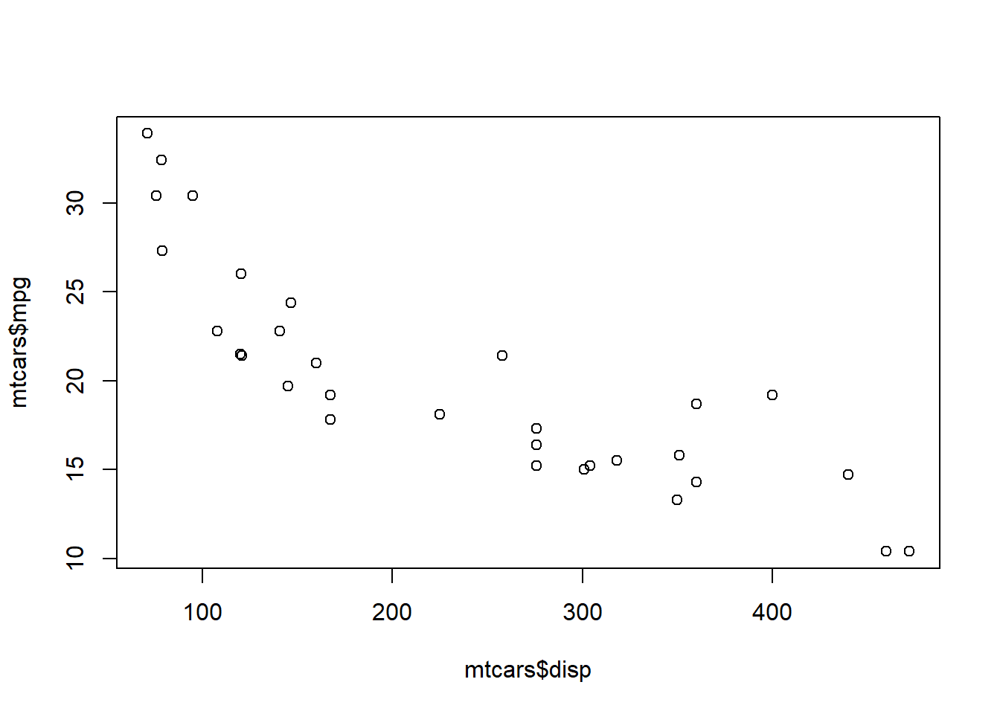
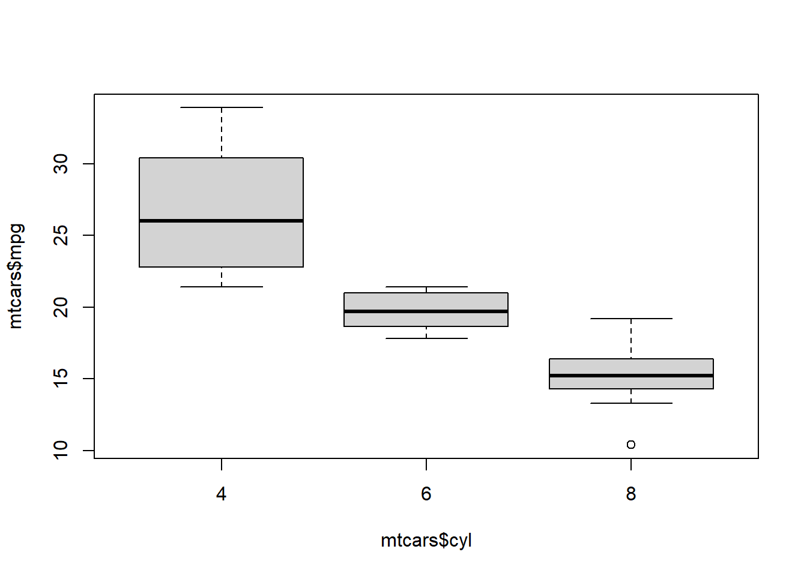

Getting started
Once you have installed R and Rstudio, we can get started with R!
Packages
For a lot of R functions, additional libraries need to be loaded.
This can be done with:
library(lattice)Sometimes the library needs to be installed first:
install.packages(lattice)
library(lattice)Installing a library only needs to be done once. Loading the library must be done every time you start R.
Importing data sets
How do I get my data in R?
SPSS file
- Load the library foreign
library(foreign)- Load data from spss using the function read.spss
data <- read.spss("C:/Documents/data.sav", to.data.frame = TRUE)Excel file
- Load the library readxl
library(readxl)- Load data from spss using the function read_excel
data <- read_excel("C:/Documents/data.xlsx")Note 1 For R to recognize the folder you need to use forward slashes (/) instead of backward slashes (\)
Note 2 Pay attention to the name you give your data set. You want it to be distinct, but don’t make it too long!
Graphs
Let’s explore a dataset graphically.
We will use a standard data set available in R (mtcars).
data(mtcars)With the function head, we can print the first couple of rows; check out the names of the variables and the first entries.
head(mtcars)## mpg cyl disp hp drat wt qsec vs am gear carb
## Mazda RX4 21.0 6 160 110 3.90 2.620 16.46 0 1 4 4
## Mazda RX4 Wag 21.0 6 160 110 3.90 2.875 17.02 0 1 4 4
## Datsun 710 22.8 4 108 93 3.85 2.320 18.61 1 1 4 1
## Hornet 4 Drive 21.4 6 258 110 3.08 3.215 19.44 1 0 3 1
## Hornet Sportabout 18.7 8 360 175 3.15 3.440 17.02 0 0 3 2
## Valiant 18.1 6 225 105 2.76 3.460 20.22 1 0 3 1Make a simple histogram (mpg = continuous variable)
hist(mtcars$mpg)
Make a simple scatter plot (mpg & disp = continuous variables)
plot(mtcars$mpg ~ mtcars$disp)
Make a simple boxplot (mpg = continuous variable, cyl = categorical variable)
boxplot(mtcars$mpg ~ mtcars$cyl)
Improve the scatterplot by changing the color, adding a title, etc.
plot(mtcars$mpg ~ mtcars$disp, xlab = "Disp", ylab = "Mpg",
xlim = c(75, 475), ylim = c(10, 35),
main = "Scatterplot Mpg - Disp", col = "red", pch = 20, cex = 1.5)
Descriptives
Now we look at the dataset some more.
Obtain the summaries of each variable
summary(mtcars)## mpg cyl disp hp
## Min. :10.40 Min. :4.000 Min. : 71.1 Min. : 52.0
## 1st Qu.:15.43 1st Qu.:4.000 1st Qu.:120.8 1st Qu.: 96.5
## Median :19.20 Median :6.000 Median :196.3 Median :123.0
## Mean :20.09 Mean :6.188 Mean :230.7 Mean :146.7
## 3rd Qu.:22.80 3rd Qu.:8.000 3rd Qu.:326.0 3rd Qu.:180.0
## Max. :33.90 Max. :8.000 Max. :472.0 Max. :335.0
## drat wt qsec vs
## Min. :2.760 Min. :1.513 Min. :14.50 Min. :0.0000
## 1st Qu.:3.080 1st Qu.:2.581 1st Qu.:16.89 1st Qu.:0.0000
## Median :3.695 Median :3.325 Median :17.71 Median :0.0000
## Mean :3.597 Mean :3.217 Mean :17.85 Mean :0.4375
## 3rd Qu.:3.920 3rd Qu.:3.610 3rd Qu.:18.90 3rd Qu.:1.0000
## Max. :4.930 Max. :5.424 Max. :22.90 Max. :1.0000
## am gear carb
## Min. :0.0000 Min. :3.000 Min. :1.000
## 1st Qu.:0.0000 1st Qu.:3.000 1st Qu.:2.000
## Median :0.0000 Median :4.000 Median :2.000
## Mean :0.4062 Mean :3.688 Mean :2.812
## 3rd Qu.:1.0000 3rd Qu.:4.000 3rd Qu.:4.000
## Max. :1.0000 Max. :5.000 Max. :8.000Obtain the summaries of one variable
summary(mtcars$mpg)## Min. 1st Qu. Median Mean 3rd Qu. Max.
## 10.40 15.43 19.20 20.09 22.80 33.90Look at the type of variables in the data:
Numeric - Factor - character - Integer - etc
str(mtcars)## 'data.frame': 32 obs. of 11 variables:
## $ mpg : num 21 21 22.8 21.4 18.7 18.1 14.3 24.4 22.8 19.2 ...
## $ cyl : num 6 6 4 6 8 6 8 4 4 6 ...
## $ disp: num 160 160 108 258 360 ...
## $ hp : num 110 110 93 110 175 105 245 62 95 123 ...
## $ drat: num 3.9 3.9 3.85 3.08 3.15 2.76 3.21 3.69 3.92 3.92 ...
## $ wt : num 2.62 2.88 2.32 3.21 3.44 ...
## $ qsec: num 16.5 17 18.6 19.4 17 ...
## $ vs : num 0 0 1 1 0 1 0 1 1 1 ...
## $ am : num 1 1 1 0 0 0 0 0 0 0 ...
## $ gear: num 4 4 4 3 3 3 3 4 4 4 ...
## $ carb: num 4 4 1 1 2 1 4 2 2 4 ...Obtain descriptives for continuous variables
mean (sd)
mean(mtcars$mpg)## [1] 20.09062sd(mtcars$mpg)## [1] 6.026948median (IQR)
median(mtcars$mpg)## [1] 19.2quantile(mtcars$mpg, probs = c(0.25, 0.75))## 25% 75%
## 15.425 22.800Obtain descriptives for categorical variables
Frequencies
table(mtcars$cyl)##
## 4 6 8
## 11 7 14Crosstabs
table(mtcars$cyl, mtcars$vs)##
## 0 1
## 4 1 10
## 6 3 4
## 8 14 0